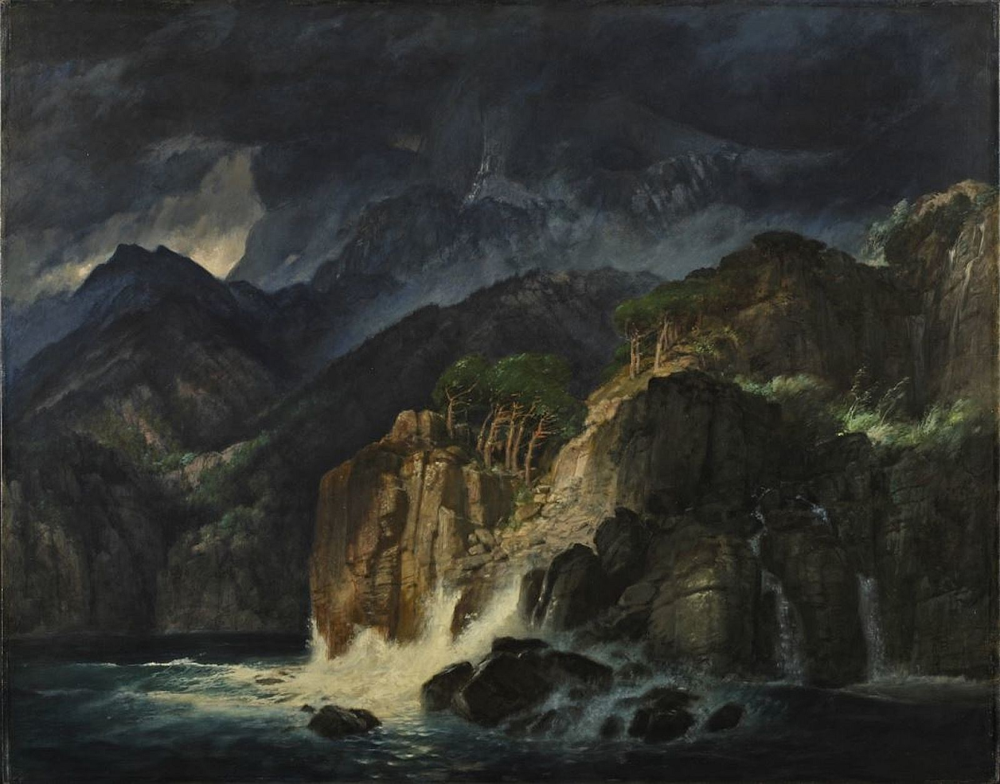
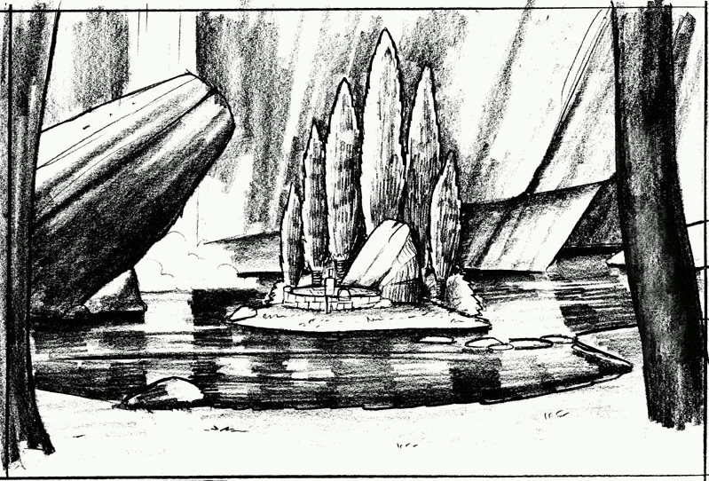
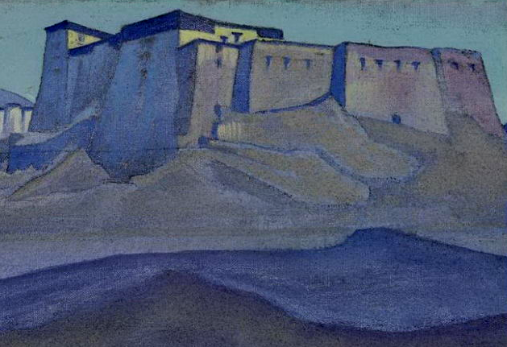
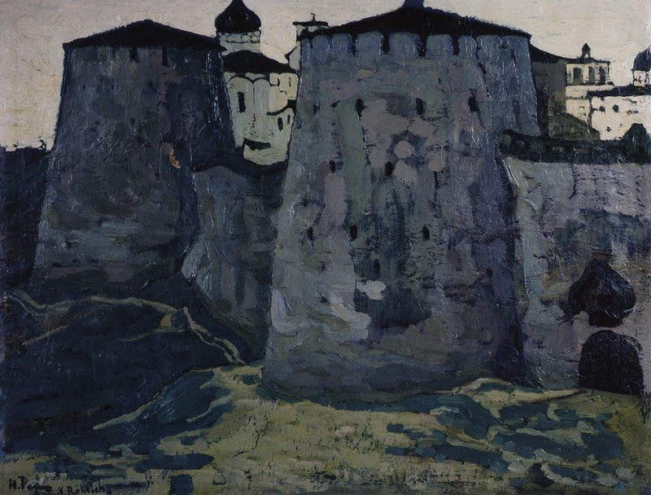
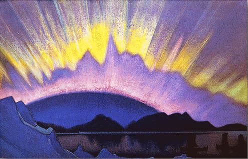
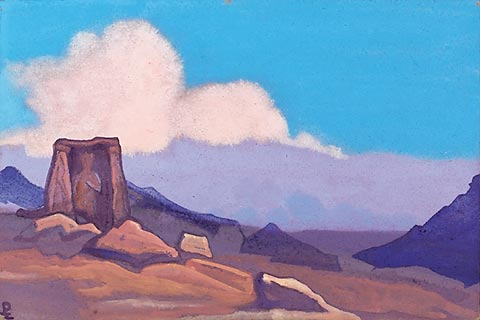
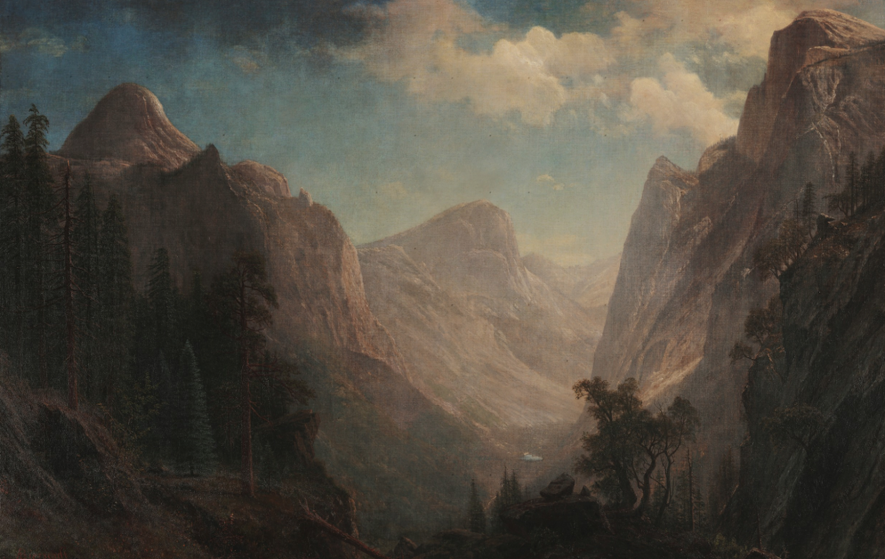
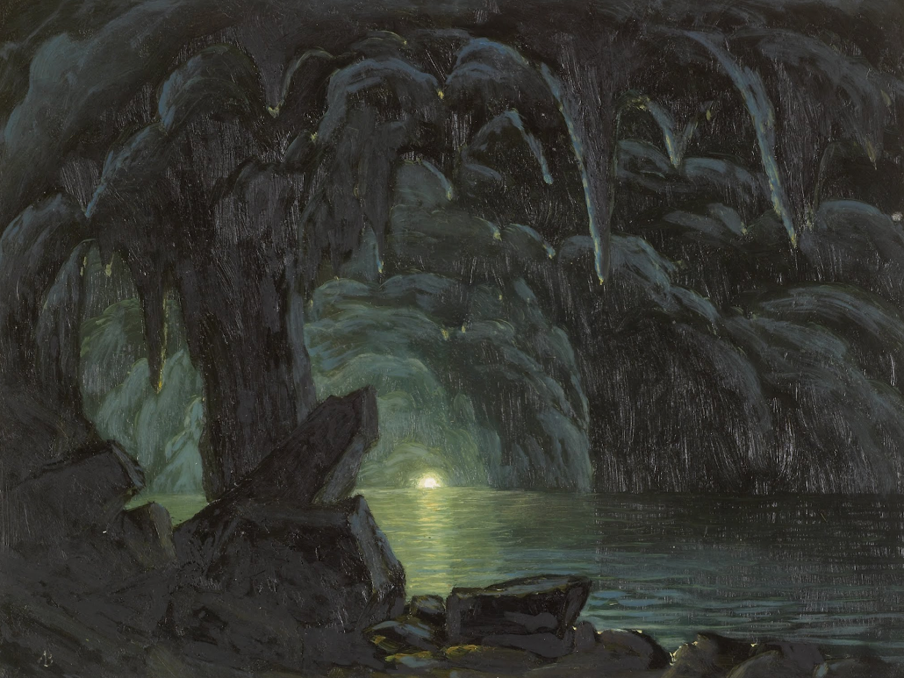
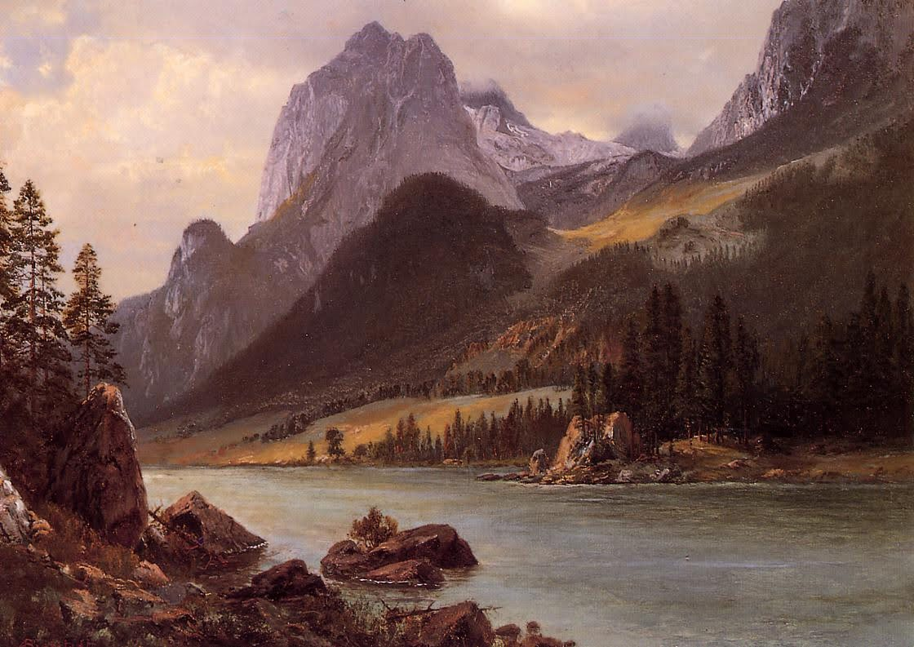

Arnold Böcklin (1827-1901) was known inspiration for Ralf.
"His paintings bore the influences of classical and Renaissance art and the Mediterranean landscape. His compositions show these new influences through allegorical and mythological themes. In his paintings, Böcklin created a strange, brooding fantasy world, populated by fantastical figures. His best known artworks are the five versions of 'Isle of the Dead' [german: Die Toteninsel] (1880–1886)."
This isle of the dead Ralf took as an inspiration for his Island of Resurrection ["Erweckungsplatz"], an early, discarded idea for the game.
While searching for reference images for Phoenix, Avallach found that public domain paintings of Nicolas Roerich reassemble many of the designs used in Gothic. We do not know for sure if they served as an inspiration for PiranhaBytes, but we show them here because they fit the dark and mystic atmosphere and color schemes they strived for:    
Another artist of which Avallach collected reference images and by which the Gothic designers may have been inspired too, is Albert Bierstadt. Here are some of his works:
  
Boris Vallejo was an inspiration for Uwe Meier. The Waran Princess (on the left) was created as a hommage to Vallejos work (on the right), as pointed out by Don-Esteban.
ThielHater found out that there are many parallels between the 27th episode ("Strafkolonie") from 3th March 1994 of the radio play "Der letzte Detektiv" (by Michael Koser) and GOTHIC (2001). Read more about his findings here.

A sequel designer might have been inspired by Judge Death from the Judge Dredd comics, when he made the royal demon hunter armor. - Florian